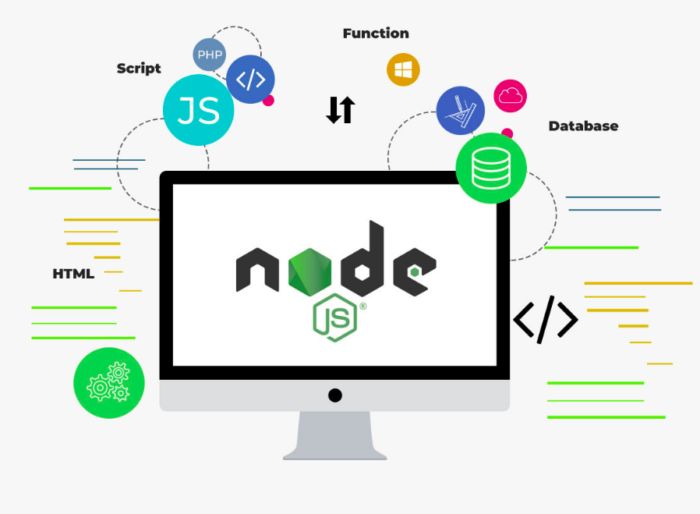

Node.js — це однопоточне кросплатформове середовище виконання з відкритим вихідним кодом і бібліотека, яка використовується для запуску вебдодатків, написаних на JavaScript, поза браузером клієнта. Звучить трохи складно, правда?
Простіше кажучи, Node.js — це програмне середовище, яке дозволяє запускати програми, написані мовою Javascript, поза браузером. Історично програми, написані на Javascript, на відміну від інших мов програмування, можна було запустити лише у браузерах, які мали спеціальний вбудований движок виконання коду цієї мови. Поза браузером Javascript, можна сказати, не працював.
При розробці Node.js за основу було взято двигун виконання JavaScript під назвою V8, який був створений компанією Google і використовувався в браузері Google Chrome. Оскільки після створення Node.js Javascript код можна запустити фактично в будь-якому середовищі, за допомогою цієї бібліотеки можна написати не лише фронтенд, а й серверну частину вебпрограми.
Простіше кажучи, це означає, що цілі сайти тепер можуть працювати з використанням єдиного «стека», що робить розробку та обслуговування набагато швидшими та легшими, дозволяючи зосередитися на досягненні бізнес-цілей проєкту.
Node.js має відкритий код, тому працювати з ним можна абсолютно безкоштовно. Його і сьогодні продовжує розвивати та покращувати глобальна спільнота розробників.
Важливо розуміти, що Node.js насправді не фреймворк і бібліотека, як у випадку з традиційним програмним забезпеченням, а середовище виконання. Він є легким, гнучким і простим у розгортанні, а всі його функції допоможуть оптимізувати та прискорити вашу програму.
Node.js був створений у 2009 році Райаном Далем. Даль критикував обмеження, пропоновані популярними вебсерверами, що існують на той момент. Раніше сервери важко обробляли велику кількість одночасних з’єднань, а виконання програми або блокувало весь процес, або передбачало необхідність використання процесора з кількома ядрами. Усі ці проблеми заважали компаніям створювати універсальні продукти, які могли б обслужити велику кількість користувачів.
У відповідь Даль створив Node.js, щоб дати розробникам можливість використовувати мову JavaScript для розробки серверної частини програми, фактично уніфікуючи розробку вебзастосунків навколо єдиної мови програмування.
Перша версія Node.js підтримувала роботу тільки з операційними системами Linux та Mac OS X. Її розробкою та обслуговуванням спочатку керував Даль, а пізніше її спонсорувала компанія Joyent, яка займається програмним забезпеченням та супутніми послугами.
У січні 2010 року був представлений диспетчер пакетів для Node.js, який спрощує для програмістів публікацію та спільне використання вихідного коду пакетів Node.js, а також спрощує встановлення, видалення та оновлення програми.
У 2011 році Microsoft і Joyent об’єдналися для розробки власної версії Node.js для Windows, розширивши кількість операційних систем, що підтримуються, і надавши цим набагато більше можливостей розробникам.
Тоді було створено Node.js Foundation, який об’єднав розробників у єдину спільноту. Node.js Foundation був об’єднаний з JS Foundation у 2019 році, сформувавши новий фонд OpenJS Foundation.
Node.js — одна з найкращих технологій, яку може використовувати розробник. Крім простоти у роботі, вона також дуже швидко працює, надсилаючи відповідь клієнту за лічені секунди.
Node.js написано мовою JavaScript. Сьогодні це найпопулярніша мова програмування у світі. Більшість програмістів вже добре знайомі з JavaScript, її роботою та іншими базовими й просунутими концепціями. Це робить Node.js простим для розуміння та вивчення. Крім того, JavaScript також використовується в стеку технологій для розробки клієнтського інтерфейсу, а додаючи використання Node.js розробники можуть створювати повноцінні робочі вебпроєкти, знаючи тільки JavaScript.
Важливою особливістю Node.js є асинхронний характер. Термін асинхронний означає, що сервер, створений з використанням Node.js, не повинен чекати, поки дані повернуться, при виконанні різних внутрішніх запитів. Водночас він також має неблокуючий введення-виведення. Це означає, що кілька різних процесів можуть виконуватись паралельно, не блокуючи один одного. Обидві ці властивості роблять Node.js вкрай швидкою і забезпечують кращий інтерфейс користувача.
Термін «керований подіями» означає, що код перед виконанням чекає на якусь подію. У Node.js, при старті виконання будь-якої операції, можна одразу ж передати функцію, яка має бути виконана після закінчення цього завдання. Такі функції називають функціями зворотного дзвінка, також відомі як обробники події. Функції зворотного дзвінка вимагають менше ресурсів на стороні сервера і займають менше пам’яті.
У Node.js всі однопоточні запити, які збираються в циклі обробки подій (Event loop). Це означає, що всі програми виконуються в одному потоці, починаючи з отримання запиту і закінчуючи виконанням необхідного завдання та надсиланням відповіді клієнту назад. Ця функція Node.js запобігає повторному завантаженню запитів і скорочує час їх обробки, що робить його більш економічним у використанні.
Як ми вже обговорювали раніше, Node.js можна використовувати на різних системах від Windows до Mac OS, Linux і навіть на мобільних платформах. Це дозволяє створити самодостатнє середовище у будь-якій галузі розробки.
Node.js використовує двигун виконання JavaScript V8. Цей движок також використовується у браузері Google Chrome. Завдяки цьому робота Node.js значно прискорюється, а отже забезпечується дуже швидка потокова передача даних для вебзастосунку.
За статистикою сайту djinni, середня зарплата Node.js-фахівця в Україні сьогодні — $3000-$5000.
Node.js використовується для різних програм. Нижче ми розглянемо кілька популярних варіантів використання:
Завдяки своїй однопоточній асинхронній природі Node.js можна використовувати для обробки повідомлень у реальному часі. Він легко масштабується і часто використовується для створення чат-ботів. Node.js також спрощує створення додаткових функцій чату, які розраховані на багато користувачів чату і push-сповіщення.
Програми IoT зазвичай містять кілька датчиків, оскільки часто відправляють невеликі фрагменти даних, які можуть накопичуватися при великій кількості запитів. Node.js в такому випадку — гарний вибір, тому що він може швидко обробляти ці одночасні запити.
Такі компанії, як Netflix, працюють із Node.js для потокової передачі. В основному це пов’язано з тим, що Node.js є легким і швидким. Крім того, Node.js надає власний потоковий API. Ці потоки дозволяють користувачам передавати дані швидше, ніж при використанні інших технологій.
У SPA вся програма завантажується один раз на одній HTML-сторінці. Зазвичай це означає, що у фоновому режимі виконується кілька запитів зміни компонентів на екрані користувача. Тут на допомогу приходить цикл обробки подій Node.js, оскільки він обробляє подібні запити неблокуючим чином.
JavaScript може використовуватись як у зовнішньому, так і внутрішньому інтерфейсі сайтів. Таким чином, сервер може легко взаємодіяти із зовнішнім інтерфейсом через REST API, використовуючи Node.js. Node.js також пропонує такі пакети, як Express.js і Koa, які дозволяють створити вебсервер з нуля ще простіше і швидше.
Node.js є дуже перспективною технологією, адже її використовують багато відомих компаній, таких як Netflix, Uber, Paypal, LinkedIn та інші. Крім гучних імен, багато стартап також використовують Node.js при розробці своїх застосунків.
Головний висновок — навички роботи з Node.js зробить вас затребуваним кандидатом на ринку IT. Якщо ви шукаєте курси javascript з нуля або курс професії розробника Node.JS, зверніть увагу на освітній центр DAN.IT. За час навчання ви оволодієте всіма необхідними технологіями, мовами програмування, а також розробите вебінтерфейси та програми. Курси javaScript в DAN.IT це відмінний перший крок назустріч затребуваної IT-професії.